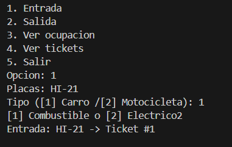
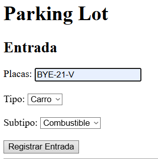
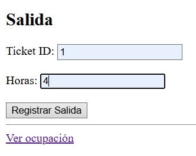

Practica2
Reporte: Paradigmas de la Programación Práctica 02:
Simulador de Estacionamiento
Nombre: Luis Angel Martinez Zamaniego
1. Introduccion
Este proyecto consiste en el desarrollo de un simulador de estacionamiento, cuyo objetivo es gestionar la entrada y salida de vehículos, así como la asignación de espacios disponibles.
Se implementaron conceptos fundamentales de la Programación Orientada a Objetos (POO), incluyendo encapsulación, herencia, polimorfismo y abstracción. Además, se desarrolló una interfaz de usuario mediante Flask siguiendo el patrón MVC.
2. Modelo del dominio
Clases principales y responsabilidades
-
Vehiculo
- Representa un vehiculo
- Define comportamiento comun
-
Car, Moto, Electric
- Subtipos de vehículo
- Implementan su propia tarifa (polimorfismo)
-
ParkingSpot
- Representa un espacio de estacionamiento
- Controla si está ocupado o libre
-
Ticket
- Registra entrada/salida de un vehículo
- Relaciona vehículo con espacio
-
ParkingLot
- Administra toda la lógica del sistema
- Asigna lugares y gestiona tickets
3. Conceptos POO
Encapsulacion
def ocupar(self):
self._ocupado = True
Se protege el estado del objeto evitando acceso directo.
Abstracción
class Vehiculo:
def calcular_tarifa(self, horas):
raise NotImplementedError
Se define una interfaz común para el cálculo de tarifas.
Composición
self._tickets_activos.append(ticket)
ParkingLot administra objetos Ticket y ParkingSpot.
Herencia / Subtipos
class Electric(Car):
def calcular_tarifa(self, horas):
return horas * 15
Electric hereda de Car y modifica su comportamiento.
Polimorfismo
costo = ticket.get_vehicle().calcular_tarifa(horas)
Cada vehículo calcula su tarifa de forma diferente sin usar condicionales.
Salidas
Consola



Flask



4. MVC con Flask
Model
- vehicle.py
- parking_lot.py
- ticket.py
- spot.py
Contienen la lógica del sistema.
View
index.html
Interfaz del usuario (formularios y botones)
Controller
app.py
Maneja rutas y conecta modelo con la vista
Rutas implementadas
/ → página principal
/entrada → registrar vehículo
/salida → registrar salida
/ocupacion → ver estado
5. Pruebas manuales
Flujo 1: Entrada y salida de carro
- Registrar carro
- Se asigna un spot
- Se genera ticket
- Registrar salida con horas
- Se libera el espacio
Flujo 2: Moto y ocupación
- Registrar motocicleta
- Ver ocupación
- Confirmar incremento de ocupados
- Salida → verificar decremento
Conclusiones
El desarrollo del sistema permitió aplicar de manera práctica los conceptos de POO, especialmente el uso de polimorfismo para evitar estructuras condicionales.
El uso de Flask facilitó la transición de una interfaz de consola a una interfaz web, implementando el patrón MVC de manera básica.
El sistema es escalable, permitiendo agregar nuevos tipos de vehículos sin modificar la lógica existente.
Referencias
Python Software Foundation. (2023). Python Documentation. https://docs.python.org Pallets Projects. (2023). Flask Documentation. https://flask.palletsprojects.com Gamma, E., et al. (1994). Design Patterns. Addison-Wesley.
## Repositorio
El código fuente completo del proyecto se encuentra disponible en el siguiente repositorio:
[[Enlace al repositorio](https://drive.google.com/drive/folders/1MzQ28jZMi0WpeKIrYqicqpgcy_Qc7BBU?usp=sharing)]